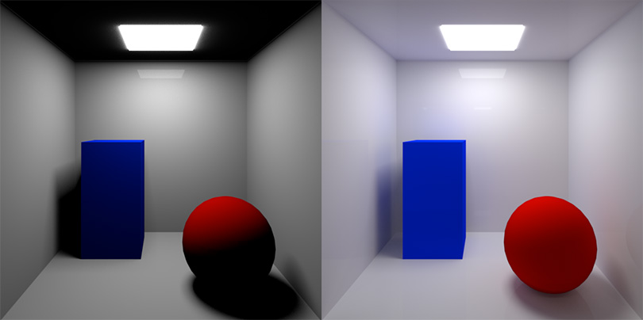
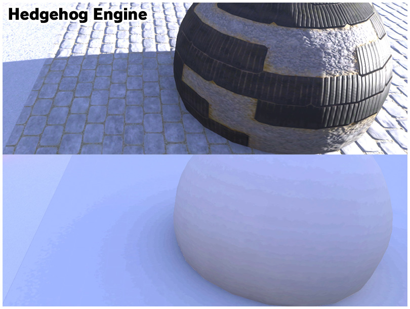
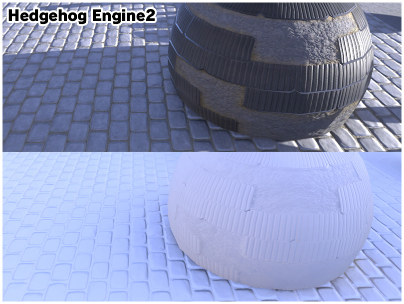
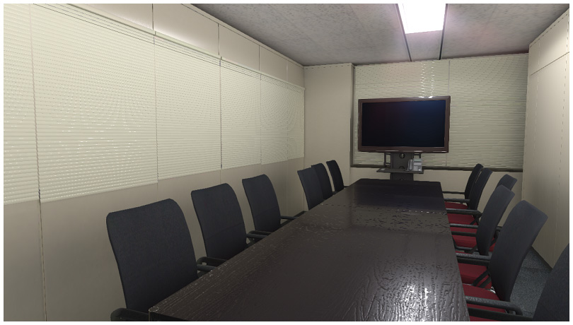
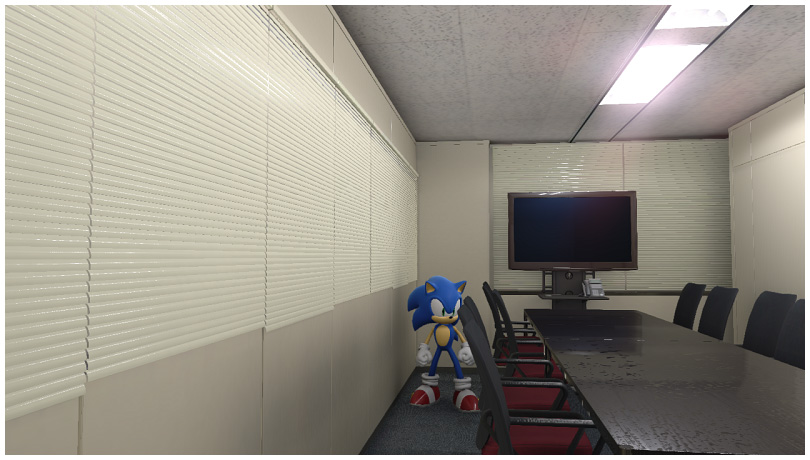
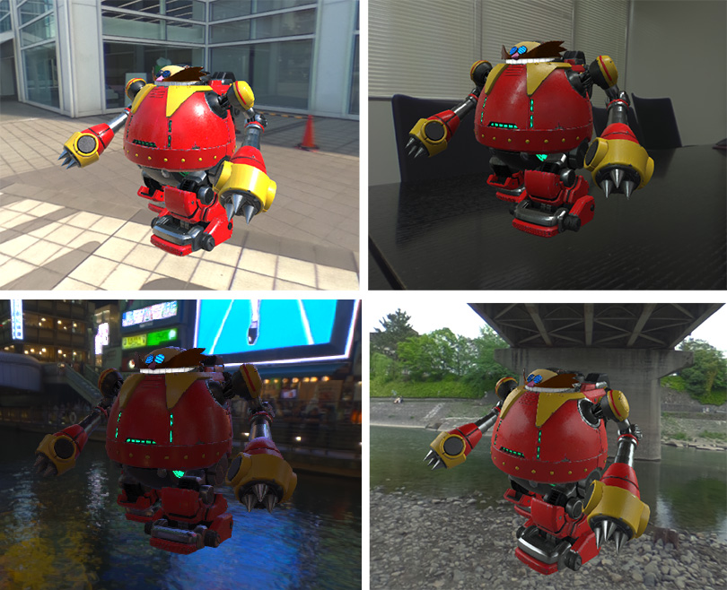

グラフィックスプログラムリーダー 大山貴輝
みなさんこんにちは。『ソニックフォース』グラフィックスプログラムリーダーの大山です。
本作で使用された「Hedgehog Engine 2」という新しいゲームエンジンのグラフィックスプログラムも兼任しています。
今までのコラムで「Hedgehog Engine 2」という名前は何回か出てきましたが「いったいどんなゲームエンジンなのだろう？」と疑問に思った方もいるのではないでしょうか。
「Hedgehog Engine 2」とはソニックワールドアドベンチャー(2008)のときに開発された「Hedgehog Engine」を新しい世代のコンソールに向けて進化させたものです。
「Hedgehog Engine」といえばグローバルイルミネーション、というワードを連想される方も多いかと思いますが、そのグローバルイルミネーションも含め、グラフィックス部分が大きく強化されました。
もちろんグラフィックス以外の部分もパワーアップしているのですが、今回はグラフィックコラムということですので、このゲームエンジンを使ってどんな表現できるようになったのかご紹介したいと思います。少し専門的な表現も多くなると思いますが、なるべくわかりやすくお話ししたいと思います。
進化したグラフィックス
最初にご紹介するのはグローバルイルミネーションについてです。グローバルイルミネーションというのは簡単にいってしまうと、現実世界のようにきれいでリアルな光をシュミレーションする機能です。
左の絵がグローバルイルミネーションなし。右の絵がグローバルイルミネーションありです。右の画像の方がリアルっぽく見えませんか？初代「Hedgehog Engine」ではこのグローバルイルミネーションをゲームの世界に取り入れたことで業界では話題になりました。
ただこの初代「Hedgehog Engine」のグローバルイルミネーションには不完全なところがありました。影の中にある凹凸などが消えてしまう。という問題です。下の絵が初代グローバルイルミネーションを使った絵です。
上半分がグローバルイルミネーションを使った画像。下半分がグローバルイルミネーションだけの画像になります。影の中には凹凸がなく、なんだかのっぺりした絵に見えます。これはグローバルイルミネーション自体に凹凸を再現する情報がなく、その結果平坦になってしまう。ということが原因でした。
今回の新しいグローバルイルミネーションではその点が改善され、よりリアルな表現が可能になりました。
こちらが新しいグローバルイルミネーションを使った絵です。影の中でも凹凸感が感じられますよね。グローバルイルミネーションが違うと、ここまで絵の結果に差が出てきます。
そして、次に紹介するのが物理ベースレンダリング。第1回目のコラムでも少しふれられていますが、今回のエンジンでは『ソニックフォース』のようなデフォルメされた世界だけではなく、より現実世界に近いグラフィックスも実現できるようになりました。
例えば上の画像も「Hedgehog Engine 2」を使って表示したものです。『ソニックフォース』開発中はグリーンヒルのようなゲームに登場するステージだけではなく、このようなサンプルもありました。この部屋は社内の会議室なのですが、かなり現実世界に近いグラフィックスになっています。
ちなみにソニックを登場させるとこのように見えます。もちろん実際の会議室にソニックはいないのですが、まるでそこにいるように見えませんか？「Hedgehog Engine 2」では物理ベースレンダリング、という手法も取り入れているので、どのような環境下でも違和感のない絵を作ることが可能になっています。
もう少し、サンプルをお見せしますね。これはエンジン開発初期段階で、背景のライティングをいろいろかえてデスエッグロボットを出してみたときの画像です。
屋外だったり室内だったり夜であったり日陰であったりと周囲の環境はさまざまですが、違和感なくロボットがとけこんでいるのがわかるかと思います。
（※このタイプのデスエッグロボットは本作では登場しません）
最後に
いかがでしたでしょうか。「Hedgehog Engine 2」を使用すると『ソニックフォース』のような世界だけではなく、こういったリアルよりの表現が実現可能になります。名前に「ヘッジホッグ」とついているので、一見ソニックだけのエンジンなのかな。と思われるかもしれませんが、さまざまな表現が可能です。今後、このエンジンを使った新たなゲームも登場するかもしれません！
全4回のグラフィックコラムいかがでしたでしょうか？今回でグラフィックコラムは終了となります。最後まで読んでいただいてありがとうございました！ ソニックフォースのゲームを末永く楽しんでいただけるとうれしいです。